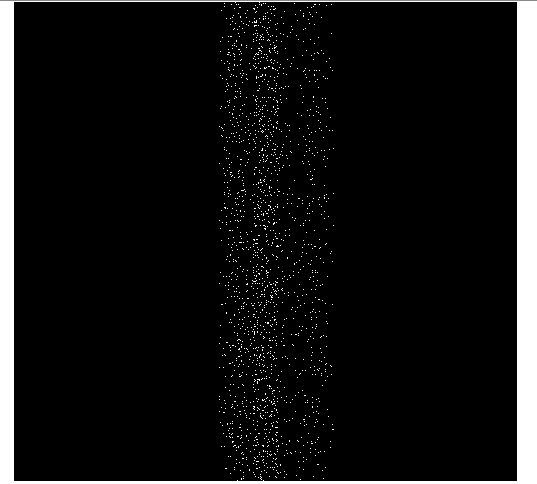
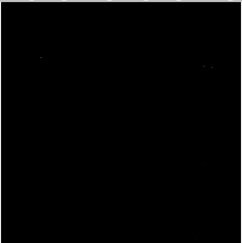
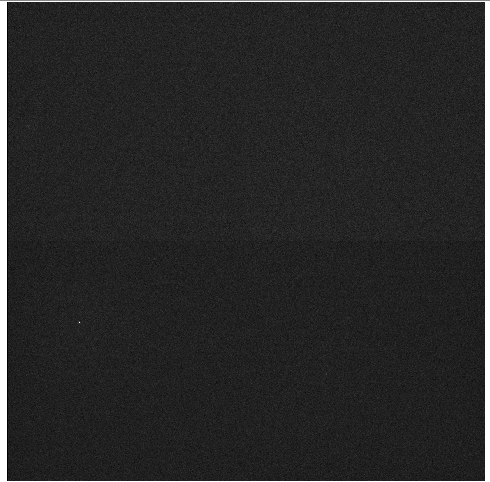
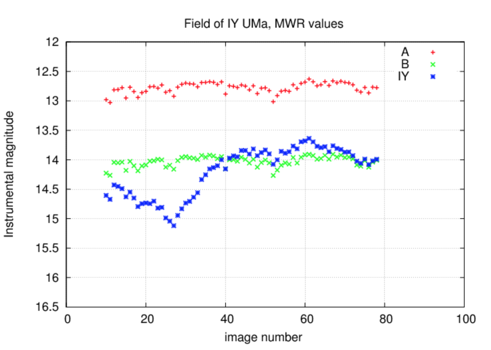
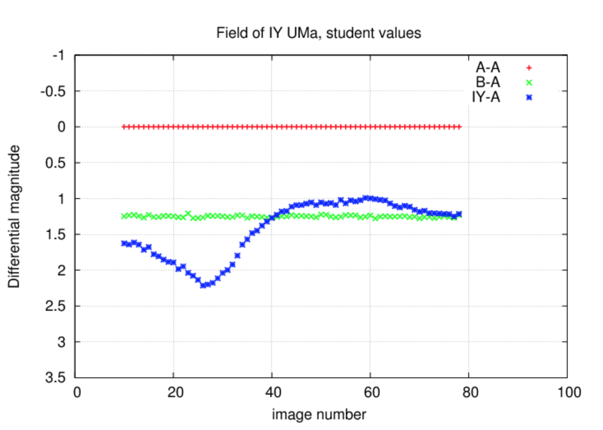

Week #4
Summary of the Past Week
Updates to Flatfielding
Last week I had an error in my flatfielding code that stated the shapes of the arrays I was trying to divide were mismatched. It became very frustrating to try and figure out what the issue was, I kept on overlooking it. Eventually, I was able to find the error; when I was combining my flats by calculating the median my array’s axis was 2 instead of 0. Once I changed this part of my code I was able to obtain my master flat.
Aligning and Combining Images
There are two processes of aligning and combining the images that we looked at. The first was adapted from our previous Observational Techniques class and the other is a new technique we are currently learning in class.
Median Combine Stacked Images
The first concept involves stacking images to combine them into one final image. You first open one image; this will be considered your master, all other images will align themselves to this image. Once you open your image you calculate the x and y displacement of your image. What you are doing here is calculating how much you need to shift the image, to match the master, in the x and y axis. You then create an empty array and add your new shifted image to the array; this array has the same dimensions as the master image. We repeat this until a stack is made. Finally, we median combine the images and make our final image.
Sigma Clipping
This method is kind of like a more sophisticated way of median combining your images. Sigma Clipping involves calculating the standard deviation and median of an image. Once you find this you will remove any pixels that are smaller or larger than your median and standard deviation values. You repeat this procedure until all your images are distributed accordingly. The process for creating a new array and adding the new image still holds.
Roadblocks
Due to the fact that I was not on campus this weekend I was not able to use the lab computers until Tuesday evening. I noticed a huge difference in using the lab computers instead of mine. Because of this delay I have only been able to go through with the combining images method that we used in AST 337. I started the combining process by initially just coding on my laptop however, I was not able to test my code as doing so would take up a lot of memory and time. The bias correction part of the notebook went smoothly. Once the bias correction was done I started running into some issues.
The first of which being that I cannot divide my science images by my master flat because their dimensions do not match. I had realized that I never got the data from the master flat image. Even after I got the data from the master flat I kept running into division errors. It was then that I decided to just add the master flat calculation to my current notebook and just to call the newly calculated image, instead of calling it from a folder.
I had tried to create lists of the new images that were being created; after bias correction and flatfielding. Unfortunately, this did not work out well. In the end I just wrote the files and accessed them again in order to perform the necessary data reduction. The next big issue I ran into was when I viewed the combined images this is what I saw:

As you can see the image has a bar through the middle with a lot of white specs. There are also no stars to be seen anywhere else in the image. This is because I had forgotten to trim the bias from both the flat and science images. Once, I trimmed the image I was given a much better result. Here are the before and after data reduction images:
BEFORE: 
AFTER: 
Next Steps
My next data analysis steps would be to 1) finish combining the images with sigma clipping and 2) repeat the same process for all the remaining nights of the observing run. Once I have reduced all my data I will move on to calculating the magnitudes of the stars in the image. This will be done by the help of aperture photometry.
Proposal Writing Updates
I have received my comments on my proposal and have realized that I need to do the following things: 1) Expand the abstract and include more scientific justification and information about what we used to collect the data, 2) Expand on the knowledge of M-dwarf stars in Coma Ber and why it is important to know more about them, 3) Talk more about differential photometry and how to obtain a light curve, and 4) include more information about figures and how the project relates to my partner’s project.
What is Differential Photometry?
Differential photometry helps us obtain the raw magnitude of the star. What does this mean? When we observe a certain field the magnitudes we obtain are called instrumental magnitudes. This is because the instruments cause some interference and thus cause the calculated data to be skewed a bit. With the help of differential photometry we are able to combat this issue. This practice involves using a star in the same image and calculating its difference from the other stars in the field. Here is what three stars look like before and after differential photometry.
BEFORE: 
AFTER: 